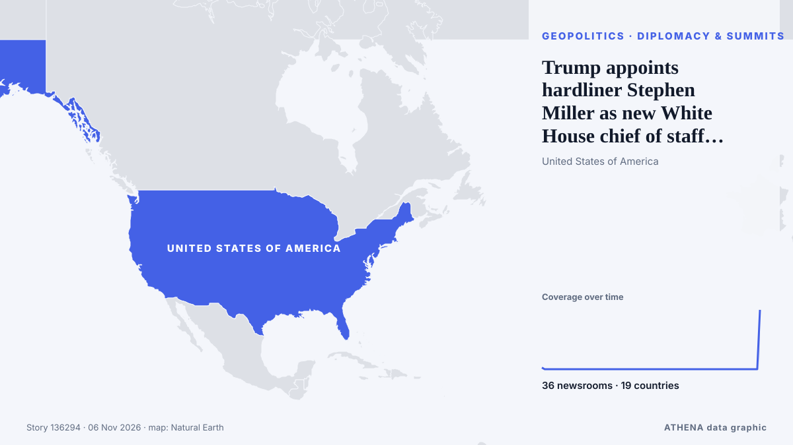

ATHENA Glaux Intelligence — Globale Nachrichtenanalyse — jede Zahl erklärt
Weltnachrichten, über Ländergrenzen hinweg geprüft
ATHENA Glaux verfolgt Hunderte Nachrichtenmedien weltweit und fasst ihre Berichte zu Ereignissen zusammen. Zu jedem Ereignis sehen Sie, wie viele Medien in wie vielen Ländern berichtet haben, wer zuerst berichtete, und einen Risikowert mit seinen Gründen — alle 30 Minuten aktualisiert, in sieben Sprachen.
Live aus den NachrichtenTrump appoints hardliner Stephen Miller as new White House chief of staff after midterm defeat36 Medien · 19 Länder · Risiko 3.3 · Quellen: CBC News (alternative feed), The Independent

GeopolitikTrump appoints hardliner Stephen Miller as new White House chief of staff after midterm defeat
Democrats pledged they would fight ‘every step of the way’ against Miller. von TheJournal.ie
Schlagzeilen werden auf Englisch angezeigt, wie veröffentlicht.
After JD Vance, now Trump Jr blames Iran war for US midterms defeat
Says war in Iran had weighed on Republican candidates, even as voters backed his handling of it. von Express Tribune
Trump says US will end military aid to Israel by end of the year
Says democrats, left-wing politicians using US financial support to Israel as a talking point to criticise Republicans. von Express Tribune

Heute in Zahlen
| 23:00 | 621 |
|---|---|
| 00:00 | 550 |
| 01:00 | 206 |
| 02:00 | 672 |
| 03:00 | 485 |
| 04:00 | 522 |
| 05:00 | 125 |
| 06:00 | 0 |
| 07:00 | 0 |
| 08:00 | 0 |
| 09:00 | 389 |
| 10:00 | 669 |
| 11:00 | 463 |
| 12:00 | 623 |
| 13:00 | 1069 |
| 14:00 | 887 |
| 15:00 | 645 |
| 16:00 | 522 |
| 17:00 | 741 |
| 18:00 | 535 |
| 19:00 | 318 |
| 20:00 | 903 |
| 21:00 | 261 |
| 22:00 | 676 |
Risiko der heutigen Ereignisse
US Midterms: Democrats take control of US Congress as voters reject Trump’s Republicans
Democrats have taken control of both chambers of the United States Congress in the November 3, 2026, midterm elections, dealing a major political setback to President Donald Trump and his Republican… von Vanguard
Pope has voted in the midterms says Vatican
(ANSA) - ROME, 30 OTT - Pope Leo XIV has voted in the US midterm elections, the Vatican said Friday. von ANSA English
Israel's Arab-led parties in spotlight after inconclusive election
LONDON: It is a measure of how much is at stake in Tuesday’s legislative election in Israel, and how finely balanced the outcome might be, that a record 22,000 police officers have been deployed in… von Arab News
Am meisten berichtet
- Wirtschaft und Märkte
Binance $6.3 Billion Heist to Prompt Closer Scrutiny by Insurers
53 Länder · 126 Medien
Neue Signale
- Plötzlicher Anstieg · Jetzt aktivStephen Miller
- Plötzlicher Anstieg · Jetzt aktivNajib
- Plötzlicher Anstieg · Jetzt aktivCybertruck
- Plötzlicher Anstieg · Jetzt aktivTundu Lissu
- Plötzlicher Anstieg · Jetzt aktivOval Office
Amtliche Warnungen
- Red notification for tropical cyclone FOUR-26. Population affected by Category 1 (120 km/h) wind speeds or higher is 1.156 million .Red · GDACS ·
- M 6.1 - Fiji regionM6.1 · USGS ·
- Cyber chief: UK facing AI-powered attacks on critical infrastructure within two yearsadvisory · UK National Cyber Security Centre ·
- M 6.0 - 165 km NW of Port-Olry, VanuatuM6.0 · USGS ·
ATHENA auf Telegram
Treten Sie kostenlos der Gruppe ATHENA Glaux bei und erhalten Sie die Nachrichten, sobald sie hier erscheinen:
- Eilmeldungen mit Risiko 6 oder mehr
- stündlich eine Übersicht der wichtigsten Ereignisse
- Updates der Risiko-Tracker
- das tägliche Briefing jeden Morgen um 10:00 Uhr (Athener Zeit)
- einen Wochenausblick
- amtliche Warnungen, Frühsignale und steigende Risiken
Tippen Sie auf die Schaltfläche, Telegram öffnet sich, dann Beitreten. Beiträge sind auf Englisch; Stummschalten oder Austreten jederzeit. Noch kein Telegram? Kostenlos auf telegram.org.
Risiko-Tracker
Mehr ›Globale Risiken – Woche 45, 2026 (2.–8. Nov.) ›
Geopolitik, Politik und Sicherheit
Mehr ›Putin puts more Japan Tobacco’s Russian assets under temporary management
All shares in Pereslavl-Tobacco, 100% of the shares in the authorized capital of JTI Innovative Products LLC, and 100% of the shares in the authorized capital of JTI Russia LLC were placed under the… von TASS (English)
- Wahlen und Politik
Muslim candidates make history in US midterm elections
- Wahlen und Politik
Abdul El-Sayed's victory proves supporting Palestine is no electoral liability
- Kriege und Konflikte
Zelensky warns of new Russian strikes on Ukraine energy sector
- Wahlen und Politik
Keisha Bottoms makes history as first Black woman elected US governor
Wirtschaft, Finanzen und Märkte
Mehr ›- Banken und Kredit
Israel set to expel 6 detained Italians Saturday says Farnesina
- Krypto und digitale Assets
Binance $6.3 Billion Heist to Prompt Closer Scrutiny by Insurers
- Banken und Kredit
Paraguay's president tangled up in Ueno banking crisis
- Prognosen und Rezession
United States Unit Labor Costs below forecasts (0.6%) in 3Q: Actual (-0.7%)
Handel, Industrie und Infrastruktur
Mehr ›Judge blocks construction of Trump’s massive arch after federal agency approval
A federal judge has temporarily blocked construction of US President Donald Trump's "triumphal arch" in Washington. von MyJoyOnline
- Luftfahrt, Bahn und Straße
Europe bomb hoaxes spread to media, more flights hit
- Lieferketten und Logistik
UN says struggling to help millions fleeing Sudan war find shelter
- Schifffahrt und Häfen
Tankers carrying Russian diesel to the US change course
- Luftfahrt, Bahn und Straße
Pope Leo XIV Departs for First Latin America Journey to Uruguay Argentina and Peru
Energie, Rohstoffe und Umwelt
Mehr ›Singapore to end N95 mask distribution on Saturday as haze abates
The Ministry of Health will deactivate both the Public Health Preparedness Clinic Scheme and the Haze Subsidy Scheme from Nov 12. von CNA (Channel NewsAsia)
- Umwelt und Artenvielfalt
Panda fans flock to zoo as two of the black and white bears make Atlanta debut
- Klima und Klimapolitik
2026 'most likely' to be second-hottest year on record: EU monitor
- Öl und Gas
ADNOC signs LNG deal with Gujarat Energy to supply 4 million tonnes over 10 years
- Strom und Netze
Greece Issues NAVTEX to Resume Undersea Electricity Cable Surveys With Cyprus
Technologie, KI und Cybersicherheit
Mehr ›Nvidia CEO Jensen Huang drops from world’s top 10 richest after chips sell-off
Nvidia CEO Jensen Huang warned that Europe risks falling further behind the US and China in artificial intelligence, despite its industrial base and technical talent. von DigiTimes Asia
- Telekom und Netze
Ships loiter near subsea cables amid Iran's warnings to Trump
- Cybersicherheit
Bomb threats spread to European newsrooms after wave of passenger jet scares
- Software und Cloud
Protesters break into Microsoft AI data centre site in Amsterdam
- Medien und Desinformation
Russell Brand’s barrister reports himself to regulator after tirade against journalist
Unternehmen und Investitionen
Mehr ›Tesla To 'Wind Down' Cybertruck Production Next Year: Musk
Tesla will stop building the truck at its Texas factory around the middle of 2027 to free up space for its Cybercab robotaxi, Musk said. von NDTV
Gesundheit, Wissenschaft und Forschung
Mehr ›Wisconsin reports measles death of a baby, first death in over 35 years
Next week, experts will determine if the US has lost its measles elimination status. von Ars Technica
- Medizinische Forschung
Pope Leo begins a 12-day, 3-country South America tour after his cancer surgery
- Pharma und Biotech
Iraq helps UAE arrest 20 in Captagon bust
- Pharma und Biotech
Mexican judge arrested over alleged $2M bribe to release Ryan Wedding's second-in-command
- Medizinische Forschung
Pope Leo arrives in Uruguay starting 12-day Latin America tour
Gesellschaft, Recht und Politik
Mehr ›Meghan Markle’s father arrested, charged over child abuse material
The Metropolitan Police acknowledged receiving a letter in 2019 regarding accusations about Meghan Markle’s father but did not share this information with other law agencies. von Arab News
- Gerichte und Justiz
The leader of a Kenyan doomsday cult is sentenced to 200 years in prison
- Gerichte und Justiz
Tanzania opposition leader Tundu Lissu awaits verdict in treason trial
- Unglücke und Notfälle
Bus carrying schoolchildren crashes in France, killing 2 and injuring 16
- Gerichte und Justiz
California governor commutes sentences for state’s 548 death row inmates
Sport
Mehr ›WTA takes blame after Pegula comments on Andreeva get livestreamed
WASHINGTON: The Women’s Tennis Association (WTA) on Thursday said it takes “full responsibility” for failing to inform players about active microphones on practice courts after private comments by… von Arab News
- Fußball
Japan FA honorary president Tashima to challenge Infantino for FIFA presidency
- Fußball
‘It’ll Never Be Forgotten’, Flamingos Captain On Hopes Of Winning U-17 World Cup
- Fußball
Nothing personal says England coach Thomas Tuchel as he overlooks Cole Palmer
- Fußball
FIFA visits Portugal as preparations for 2030 World Cup continue
Kultur, Menschen und Lifestyle
Mehr ›Macklemore says nine major US arenas turned down his Free Palestine tour
The rapper was dropped from Ed Sheeran’s Loop tour over comments he made about Gaza. von Evening Standard (London)
- Lifestyle und Reisen
Italian chef sacked for refusing to put pineapple on pizza, says it insulted his culture
- Film und Fernsehen
Cartoon for October 30, 2026
- Film und Fernsehen
Sebastián Lelio, Oscar-Winning Chilean Director Of A Fantastic Woman And The Wonder, Dies Aged 52
- Nachrufe
Former US senator Jay Rockefeller dies at 89